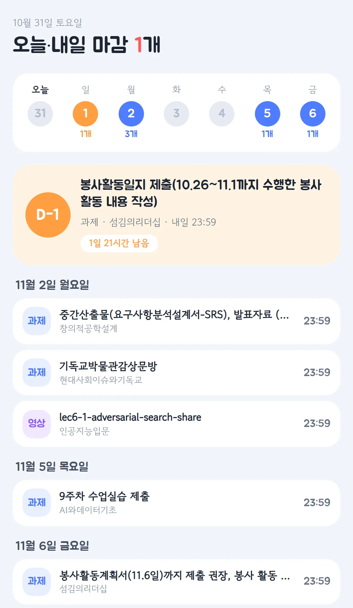
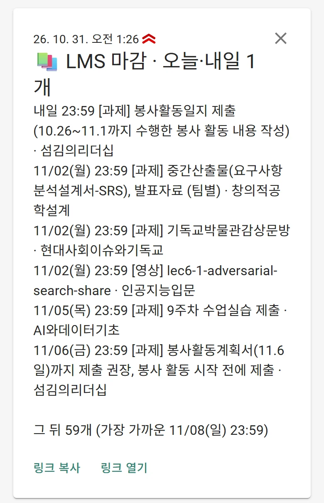

숭실대 LMS 과제·영상 마감을 매일 아침 휴대폰으로, 노트북을 켤 때마다 화면으로 알려 줘요. 이미 낸 과제와 다 본 영상은 빠져요.

노트북 창
휴대폰 알림아주 긴 진동과 함께 화면 위에 떠요
긴 진동과 알림음, 화면 위에 떠요
짧은 진동과 기본 알림음
내가 LMS 설정에서 만든 열쇠. 비밀번호는 저장하지 않아요
이번 학기 듣는 과목을 LMS에서 받아요
사람이 주차학습 탭을 누르듯 열어서 2시간짜리 출석 토큰을 받아요
과목마다 과제·퀴즈·토론과 강의 영상의 마감일을 읽어요
낸 과제, 다 본 영상, 지난 마감은 빼고 마감 순으로 정렬
/learningx/api/v1/courses/{과목}/allcomponents_db/learningx/api/v1/courses/{과목}/modules?include_detail=truepython lms_alert.py --show지금 목록을 창으로python lms_alert.py --test휴대폰으로 시험 알림python lms_alert.py setup토큰 다시 붙여 넣기schtasks /Change /TN "LMS 마감 알림" /DISABLE잠시 끄기lms_alert.py가져오기·알림lms_alert.html노트북 창 디자인.lms_alert.json토큰·알림 주소 (공개 금지).lms_alert.log언제 무엇을 보냈는지작업 스케줄러8시 · 로그인 · 잠금 해제연결이 끊기면 창과 휴대폰에 알려 줘요. 그때 Claude에게 "LMS 다시 연결해".